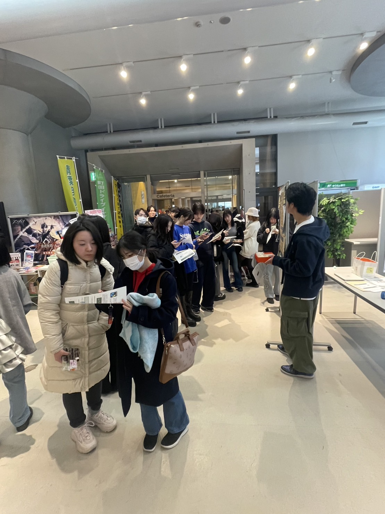

大学1年
7月
7月
初めてのホームページ制作。
授業で優秀作品に選出
「コンピューティング実習」という授業で学年約200名のうちから上位9名の優秀作品に選んでいただきました。
デザインの見やすさが評価されました。先生から「日々Webサイトの構造をよく見ている」とお言葉を頂きました。
制作したサイト：https://yanaaaaachan.github.io/LovingEveryBites/
大学1年
10月
10月
サークル内でチーム開発。
「性格ぴったりグループ分けアプリ」を制作
私の所属しているプログラミングサークル「PiedPiper」にてチーム開発をしました。
私はフロントエンドを担当し、当時話題であったMBTIを用いたチーム分けアプリを作りました。
制作したアプリ：https://hatothon-app.onrender.com
大学2年
12月
12月
フェアトレードイベントを主催
「j-bingo」というプロジェクトに参加し、児童労働・フェアトレードにの認知度を上げるイベントを企画、調査、開催しました。
私はILO(国際労働機関)様やNPO団体ハロハロ様、フェアトレード・ラベル・ジャパン様とのヒアリング、イベントで用いるフェアトレードクイズサイトの作成、イベントに関連する企業と大学教員とのメールのやり取りなどを担当しました。
制作したクイズ：https://yanaaaaachan.github.io/fair-trade-quiz/



大学2年
2月
2月
TOEIC Reading&Listening公開テストにて835点を取得
外国人留学生と交流し、英語に慣れるようにしました。また、授業ではTOEICに特化してリスニングとリーディングを勉強しました。